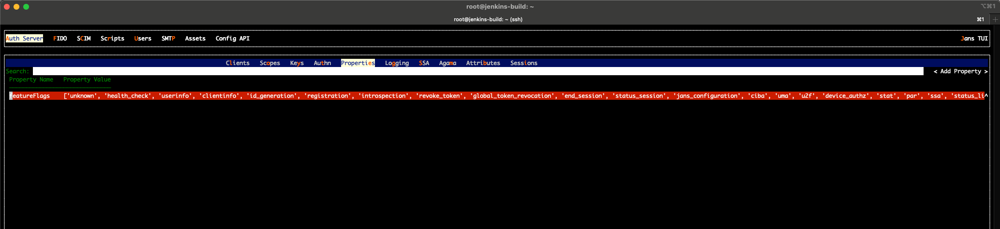
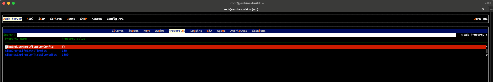
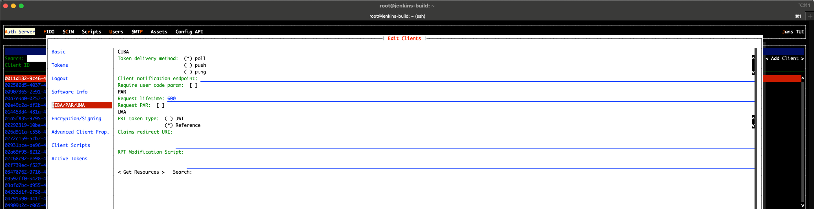

CIBA (Client Initiated Backchannel Authentication)#
CIBA decouples the device the user interacts on (the Authentication Device, AD — typically the user's phone) from the device that initiates the request (the Consumption Device, CD — a call-center agent terminal, a kiosk, a smart TV, etc.). The Relying Party (RP) asks the Authorization Server to authenticate a named end-user out-of-band; the AS contacts the user on their AD, gets consent, and returns tokens to the RP through one of three delivery channels.
Janssen Authorization Server implements the OpenID Connect Client Initiated Backchannel Authentication Flow — Core 1.0 specification. This page covers the Janssen-specific pieces — feature flag, server properties, per-client metadata, endpoints, and the custom script that drives notifications. For protocol semantics (parameter rules, error codes, JWT signing requirements) read the spec.
High-level flow#
Relying Party (CD) Janssen AS End User (AD)
| | |
| 1. POST /bc-authorize | |
| (login_hint, scope, | |
| binding_message, ...) | |
|--------------------------->| |
| | |
| auth_req_id, expires_in, | |
| interval | |
|<---------------------------| |
| | |
| | 2. Notify end-user |
| | (push / out-of-band) |
| |------------------------->|
| | |
| | user authenticates & |
| | approves the request |
| |<-------------------------|
| | |
| 3. token delivery depends on the mode: |
| - poll: RP polls /token with auth_req_id |
| - ping: AS pings client_notification_endpoint, |
| RP then calls /token |
| - push: AS POSTs id_token+access_token+refresh |
| to client_notification_endpoint |
| | |
Token delivery modes#
Janssen supports the three delivery modes defined by the spec. The mode
is a per-client setting, but the AS-wide list of allowed modes is
controlled by the backchannelTokenDeliveryModesSupported server
property.
| Mode | Who calls whom for tokens | RP must expose a callback? |
|---|---|---|
poll |
RP polls /token with grant_type=urn:openid:params:grant-type:ciba and auth_req_id. |
No. |
ping |
AS POSTs a ping to backchannel_client_notification_endpoint; RP then polls /token. |
Yes — for the ping notification. |
push |
AS POSTs the full token response (id_token, access_token, refresh_token) to the RP. | Yes — for the token delivery. |
Prefer ping or push in production; poll is simpler to integrate
but creates load proportional to the number of pending requests.
Enabling CIBA#
CIBA is gated by a feature flag. With the flag off, the
bc-authorize and bc-deviceRegistration endpoints reject requests
and the backchannel_* keys are stripped from the discovery document.
- Toggle the
cibafeature flag — via Janssen TUI: Auth Server → Properties → featureFlags and addciba. The same flag is settable through the config-api under/jans-config-api/api/v1/jans-auth-server/config.
- Set the CIBA server properties (see the next section).

- Configure each CIBA-enabled client (see "Per-client configuration"
below). A client whose
backchannel_token_delivery_modeis unset cannot use CIBA, regardless of the server-wide flag.
Server-level properties#
All properties below are fields of AppConfiguration. The descriptions
and default values are kept in sync with the source in the
generated properties reference;
the table here groups them by purpose so an admin can see what to touch
together.
Endpoints#
| Property | Purpose |
|---|---|
backchannelAuthenticationEndpoint |
URL of the bc-authorize endpoint published in discovery. |
backchannelDeviceRegistrationEndpoint |
URL of the bc-deviceRegistration endpoint. |
Identity used by the AS to drive authorization#
These are used internally when the AS bridges the CIBA flow into the standard authorization endpoint (for the user-facing authentication and consent step on the AD).
| Property | Purpose |
|---|---|
backchannelClientId |
Internal client used by the EndUserNotification script to construct authorize requests. |
backchannelRedirectUri |
Redirect URI for that internal client. |
Request-format policy#
| Property | Purpose |
|---|---|
backchannelAuthenticationRequestSigningAlgValuesSupported |
Algorithms the AS will accept on a signed CIBA authentication request. |
backchannelUserCodeParameterSupported |
Whether the AS accepts the user_code parameter (extra factor for high-assurance CIBA flows). |
backchannelBindingMessagePattern |
Regex the binding_message parameter must match. Use it to constrain what an RP can render on the user's AD. |
Timing#
| Property | Purpose |
|---|---|
backchannelAuthenticationResponseExpiresIn |
Lifetime (seconds) of auth_req_id. The RP must complete the flow before this expires. |
backchannelAuthenticationResponseInterval |
Minimum poll interval the AS advertises to RPs in poll/ping modes; below this the AS returns slow_down. |
cibaGrantLifeExtraTimeSec |
Extra seconds the resulting grant lives beyond auth_req_id expiry; covers clock skew. |
cibaMaxExpirationTimeAllowedSec |
Upper bound on requested_expiry the RP can ask for. Keep this conservative. |
Login-hint resolution#
| Property | Purpose |
|---|---|
backchannelLoginHintClaims |
When login_hint_token is used, the claim names in this list are matched against the user directory. |
Background processor#
The AS runs a background worker that fans out notifications and drives
state transitions (expired, denied, granted) for pending CIBA
requests.
| Property | Purpose |
|---|---|
backchannelRequestsProcessorJobIntervalSec |
How often the processor wakes up. |
backchannelRequestsProcessorJobChunkSize |
How many pending requests it processes per iteration. Tune for throughput. |
Notification configuration#
| Property | Purpose |
|---|---|
cibaEndUserNotificationConfig |
Endpoint URL, encrypted key, and other knobs consumed by the EndUserNotification script (e.g. Firebase Cloud Messaging settings). |
Per-client configuration#
CIBA is opt-in per client. Set these in TUI under Clients → (your
client) → CIBA, or include them in a /register
(dynamic registration)
request:
| Client attribute | Required for CIBA? | Notes |
|---|---|---|
backchannel_token_delivery_mode |
Yes | One of poll, ping, push. Must also appear in the server-wide backchannelTokenDeliveryModesSupported. |
backchannel_client_notification_endpoint |
Yes for ping/push |
HTTPS URL the AS calls. Must be reachable from the AS and TLS-trusted. |
backchannel_authentication_request_signing_alg |
Recommended | Signing algorithm for the JWT-form request parameter. Restrict to your fleet's strongest supported asymmetric algorithm. |
backchannel_user_code_parameter |
Optional | true if the client will provide user_code on every CIBA request. |
grant_types |
Yes | Must include urn:openid:params:grant-type:ciba. |
Endpoints#
Janssen exposes two CIBA-specific endpoints, both under the standard
/jans-auth/restv1 prefix:
POST /jans-auth/restv1/bc-authorize— the CIBA Authentication Endpoint per spec §7. Full request/response schema in the OpenAPI spec —bc-authorize. Returnsauth_req_id,expires_in,interval.POST /jans-auth/restv1/bc-deviceRegistration— Janssen-specific endpoint used to register a device push token (Firebase, APNs) so the AS can later notify it. See the OpenAPI spec —bc-deviceRegistration.POST /jans-auth/restv1/tokenwithgrant_type=urn:openid:params:grant-type:cibaandauth_req_idis howpollandpingclients pick up the issued tokens. See the token endpoint documentation.
When CIBA is enabled the AS publishes the corresponding metadata
(backchannel_authentication_endpoint, supported delivery modes,
supported signing algorithms, backchannel_user_code_parameter_supported)
in /.well-known/openid-configuration.
End User Notification custom script#
The AS does not hard-code a notification mechanism. When a CIBA request
arrives, it invokes the EndUserNotification interception script with
the request context; the script is responsible for actually reaching the
user's AD (Firebase Cloud Messaging, APNs, SMS, email, etc.) and returning
true/false to indicate success.
For the script interface, examples, and how to register a script configuration, see the script catalog page: CIBA End User Notification script.
Use cases#
- Call-center agent–assisted login. Agent terminal (CD) initiates CIBA; the customer authenticates and consents on their phone (AD). Agent never sees the customer's credentials.
- Mobile-as-second-factor for web checkout. Web RP submits a CIBA
request after the user enters their identifier; the user approves the
transaction on their already-trusted mobile app.
binding_messagecarries a short purchase summary so the user knows what they're approving. - Constrained-input device sign-in. Smart TV, kiosk, or set-top box with no usable keyboard initiates CIBA against the user's phone; no device-code QR step required.
- Step-up authentication for a sensitive operation. A long-lived web
session triggers a CIBA flow with a high
acr_valuesrequirement whenever a high-risk action is attempted.
Recommendations#
- Prefer
pingorpushoverpoll. Polling is the easiest mode to implement but the most expensive at scale; it also adds latency bounded bybackchannelAuthenticationResponseInterval. - Require signed authentication requests in production. Use the
requestparameter (JWT) and restrictbackchannelAuthenticationRequestSigningAlgValuesSupportedto one strong asymmetric algorithm (e.g.PS256orES256); rejectnone. - Set
cibaMaxExpirationTimeAllowedSecconservatively. The longer anauth_req_idis valid, the larger the window for replay or abandoned-request abuse. - Constrain
binding_message. UsebackchannelBindingMessagePatternto enforce a regex (length, allowed characters) so a malicious RP can't render arbitrary content on a user's AD. - Lock down the notification endpoint. For
ping/pushthe AS POSTs to a URL the RP controls; TLS must terminate with a certificate the AS trusts, and the RP should validate the bearer token the AS sends with each notification. - Audit-log
auth_req_id. It correlatesbc-authorize→ notification → token issuance across logs and is invaluable when diagnosing a stuck CIBA request.
Troubleshooting#
Logs of interest:
/opt/jans/jetty/jans-auth/logs/jans-auth.log— AS-side request handling./opt/jans/jetty/jans-auth/logs/jans-auth_script.log— output of the EndUserNotification script.
| Symptom | Likely cause |
|---|---|
bc-authorize returns unknown_user_id |
login_hint / login_hint_token / id_token_hint resolution failed. Check backchannelLoginHintClaims and the user directory. |
RP gets repeated slow_down |
Poll interval is below backchannelAuthenticationResponseInterval. Honor interval in the bc-authorize response. |
expired_token immediately after authorization_pending |
backchannelAuthenticationResponseExpiresIn is too short for the user to reach their AD; increase it. |
Script returns false for every notification |
Misconfigured cibaEndUserNotificationConfig (wrong URL or key). Inspect jans-auth_script.log. |
RP never receives push callback |
backchannel_client_notification_endpoint not reachable from the AS, or TLS chain not trusted by the AS JVM. |
Want to contribute?#
If you have content you'd like to contribute to this page, you can get started with our Contribution guide.